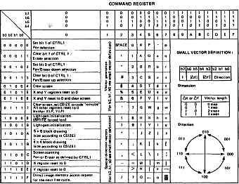
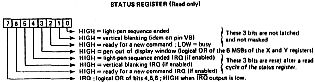

80-Bus Journal |
April/Mai/Juni 1984 · Ausgabe 2 |
Ins Kommandoregister kann nur geschrieben werden. Jeder Befehl (siehe Tabelle) löst eine Aktion des GDP aus. Durch einige Befehle können auch Bits in anderen Registern geändert werden.

Dieses Register kann nur gelesen werden. Es gibt folgende Zustände des GDP an:
| Bit0 | LOW = ein Lichtgriffel-Durchgang wird gerade ausgeführt |
| Bit1 | HIGH während des vertical blanking |
| Bit2 | LOW = es wird gerade ein Befehl ausgeführt HIGH= Ready |
| Bit3 | HIGH=X-und Y-Register außerhalb des Bildschirmfensters |
| Bit4 | HIGH=Lichtgriffeldurchgang mit Int. beendet |
| Bit5 | HIGH=vertical blanking interr. erzeugt |
| Bit6 | HIGH=Interr. durch Beendigung eines Befehls ausgelöst |
| Bit7 | HIGH=ein Interrupt wurde ausgelöst |

Diese Register enthalten die Bildschirmadresse, die durch die erste steigende Flanke am Lichtgriffelanschluß LPCK ermittelt wird.
Eine detaillierte Beschreibung des internen Aufbaus wollen wir hier nicht geben, ebensowenig den genauen Signalverlauf oder die elektrischen Grenzwerte. Diese Angaben müssen Sie einem Datenblatt der Firma Thomson entnehmen.
Diese Beschreibung soll aber die notwendigsten Informationen zum Test der Grafikkarte liefern (der hoffentlich nicht nötig ist) und vor allem bei der Programmierung des GDP behilflich sein.
Zur Ergänzung der etwas kurz gehaltenen Beschreibung empfehle ich das Studium der Listings in Heft 1/84 und in dieser Ausgabe.
Die Ausgangskoordinaten einer Linie werden durch Register 98H bis 9BH (X und Y) festgelegt. Die Register 95H und 97H (DELTAX, DELTAY) bestimmen den Abstand auf den Koordinaten- Achsen. Das Vorzeichen von DELTAX und DELTAY wird durch Bit1 und Bit2 im Plotbefehl definiert (siehe Tabelle).
Die X- und Y-Register zeigen nach dem Zeichenvorgang auf das Ende der Linie, sodaß durch einfaches Ändern der DELTA- Werte kontinuierliche Linienzüge möglich sind.
Das Löschen einer Linie geschieht durch nochmaliges Plotten der Linie, wobei Bit1 in CNTRL1 rückgesetzt werden muß (eraser).
Durch Kombinationen von Bit0 und Bit1 in CNTRL2 kann beim Linienzeichnen zwischen 4 verschiedenen Linienarten unterschieden werden. (Tabelle)
In oben beschriebener Weise wird mit den „basic commands“ 11H bis 17H (nur die ungeraden Werte, also stets Bit0 gesetzt) gearbeitet, indem man sie jeweils ins Command-Register 90H schreibt.
Es gibt noch drei andere Arten von Plotbefehlen, die schnelle Richtungsänderungen bei kurzen Vektoren erlauben. Hier eine Zusammenfassung; die Tabellen sollten zur
| Seite 13 von 52 |
|---|